Вечер 1
Жезл в пепле
Принять сдачу Ефима на тракте, отбить его у дозора охраны и довести до мачты Скола.
Открыть сценарий →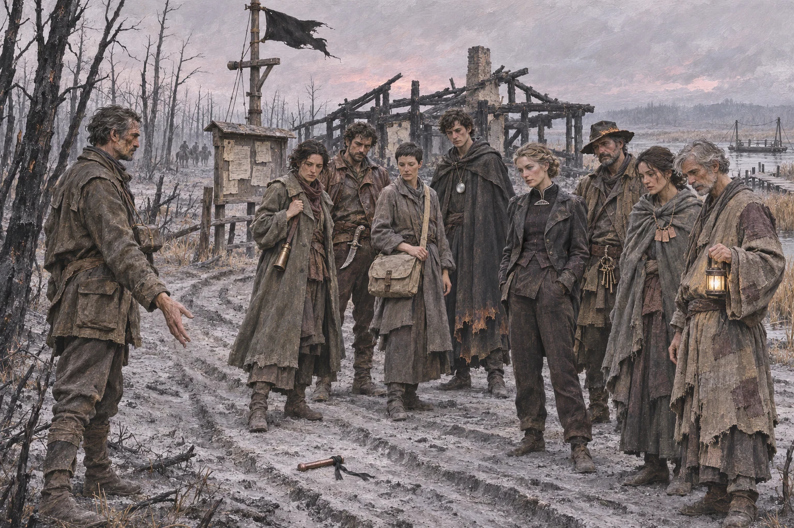
Война на Пепельной Меже кончилась девять месяцев назад. Вы идёте к окружной пристани за расчётом, когда на тракте из пепельного подлеска к вам выходит интендант охраны дорог и бросает вам под ноги свой жезл: он сдаётся вам — не охране — и просит довести до окружного стола его и то, что он несёт. За ним идёт колонна бывших соратников, и каждую ночь их обгоревший флаг встаёт на мачте всё ближе. Восемь перегонов, один окованный ящик, который понесёте вы, и последний настил над топью, где вас уже ждут.
Перед чтением вступления сверьте место героев, присутствующих людей и предметы с итогом прошлого вечера. Если условия встречи отпали, сыграйте последствия там, где находится партия. Событие по расписанию может произойти за кадром. Герои узнают о нём от тех, кто был на месте.
Спросите, успел ли кто-нибудь услышать его просьбу или взять жезл. Дозорные уводят его. В дальнейшем свидетелем разговора может быть только тот, кто действительно остался рядом. Нелла вправе спросить, почему отряд отпустил интенданта.
Проверьте отдельно, у кого ящик Чаши и у кого пакет Ефима. Засада на настиле имеет смысл лишь при встрече с носителем. Разыграйте приём у того, до кого дошли подлинники или копии. Если не дошло ничего, у стола остаются собственные показания.
Откажемся вести Ефима. Дойдём до мачты и дождёмся семей мостовиков. Встречаем семьи у мачты и записываем час задержания. Дозор уводит Ефима. Семьи получают место и час задержания; судьбу ящика им никто не обещает.
Проверим, кому принадлежали жетоны, и потребуем письмо от имени семей. Доступные свидетельства — Жетоны «К. О.», Письмо Румы. За паромом стоят люди Обуха, а Рума завлекает Ефима обещанием показать список с именем сына. Проверять придётся и письмо, и сам список. Разводим владельца жетона и читателя письма для отдельных показаний. Сличив жетоны с приказом, передаём раздельные показания. Рума узнаёт об огласке; Ефима ещё нужно найти, если семьи этого захотят.
Дозор забирает Ефима вместе с жезлом. Просим перевозчика показать запись о проходе колонны. Уходим к перевозчику и восстанавливаем путь колонны по его счётной доске. Семьям остаётся свидетельство перевозки; пленник ещё у майора.
Для игры без подготовки: что говорят люди, места в стороне от главной дороги и прохожие. Пометки о правде слухов — только для ведущего; сказанное за столом становится фактом мира, лишь когда вы его подтвердите.
«Под мачтой не берут и не бьют, хоть ты кто. Этот закон и майор держит: на нём всё право охраны на дороги стоит».
Правда. Так и есть: закон мачты держат все стороны, и Рума его не нарушит, потому что без него у охраны нет права на мачты. Полный текст — на латунной табличке у Скола в вечер 1. Слух объясняет, почему разговоры с Румой идут под мачтой, а бои — только на перегоне.
«На пароме у Верёвочной с осени чужие хозяйничают: латунные жетоны на шее, пошлину берут с головы. А перевозчик при них стоит и молчит».
Правда. Правда: это застава вечера 2. Кто ей платит, слух не говорит — это покажут жетоны «К. О.» и расскажет Семён Узлов. Встречные на тракте в вечер 2 говорят то же самое, так что ничего нового слух не выдаёт.
«Чёрные лоскуты на мачтах — от полковых знамён, что сгорели в последнем бою. Ветераны их носят вместо кокарды, как поминальную ленту».
Отчасти правда. Правда то, что это обрывки полковых знамён. Сгорели они не в бою: их жгли вместе с архивом во дворе «Сухого крыльца» в день перемирия, и это откроется у Игната в вечер 5. До тех пор слух можно повторять как есть, не поправляя.
«На Долгом настиле в тумане люди пропадают. Шагнул в сторону от своих — и всё, одна шапка на досках осталась».
Неправда. Суеверие: никто там не пропадал. В тумане просто легко потерять своих из виду, поэтому у Двух вех возчики снимают шапки и пересчитывают людей вслух. Хорошая реплика для возчика перед вечерами 7 и 8.
«Интендант Сажин помнит каждую подводу, каждый мешок фуража и каждую ведомость. Говорят, он и людей так помнит — числом, а не лицом».
Правда. Правда, и сам Ефим скажет то же: «Я помню число лучше, чем лица». В вечер 4 это отзовётся у мастерской, когда Арсен спросит у него своё имя. Что именно подписывал Ефим, слух не раскрывает.
«Двор демобилизованных чинит упряжь всем, а служит никому. Майор с осени зовёт их в охрану, коней и плату сулит, а сержант ихний всё не подписывает».
Правда. Правда: договор Румы лежит у Олета Морина на верстаке, и он его не подписал (вечер 3). Почему — Олет скажет сам, если спросить; слух этого не знает и подсказкой не служит.
«В горелой роще у колодца война ещё тлеет: после дождя оттуда гарью тянет. Кто заночует под теми стволами, тот проснётся седым».
Неправда. Суеверие: гарью тянет от мокрых углей после любого дождя, а седым там никто не просыпался. В вечер 6 роща опасна по другой причине, но о ней слух ничего не знает; пусть его повторит Фёкла или возчик у колодца.
«На пристани в этом сезоне открыли окружной стол. Демобилизованным постам там дают расчёт — и деньги, и бумагу, что отслужил своё».
Правда. Правда, и это изначальная дорога героев: стол Неллы Арк выдаёт расчёт посту «Сухой мост» и принимает добровольные явки. Слух напоминает, зачем отряд вообще шёл к пристани, когда дорога станет тяжёлой.
«Окружные ничего не пишут так, как сказано. Что им ни скажи, всё переврут по-своему, а потом поди докажи».
Неправда. Неправда: Нелла Арк записывает каждое имя так, как его назвали, и ничего не обещает сверх этого. Так говорят ветераны охраны, которым окружной стол не по душе; опровергнуть это лучше делом у навеса в вечер 8.
«Вода в Офицерском колодце самая чистая на перегоне. Её, говорят, офицерам в серебряных кружках подавали, оттого она железом и отдаёт».
Отчасти правда. Вода и правда лучшая на перегоне и отдаёт железом, а серебряные кружки — выдумка возчиков. Колодец — место вечера 6; слух годится, чтобы позвать отряд к срубу и дать Ефиму повод присесть.
Старый верстовой столб на развилке у Скола, от земли до макушки утыканный подковными гвоздями. Возчики вбивают по гвоздю за каждый перегон, пройденный без беды, и по шляпкам видно, кто ездит давно: старые гвозди почернели и вросли в дерево, новые ещё блестят. Молоток висит тут же на цепочке. Вырвать чужой гвоздь на Меже считается хуже, чем увести коня.
Шалаш из ивовых жердей на западном берегу Верёвочной, в стороне от паромной площадки. Здесь пережидают дождь и очередь на паром: внутри лавка из горбыля и кострище, обложенное речными камнями. На ветках у входа висят выцветшие ленты, какие на Меже вяжут на счастье в дорогу. Новую ленту привязывают поверх старой, а старых не снимает никто.
Низкая банька на краю Сухого оврага, за навесом для коней. Топят её через день, и дорожный пепел смывают здесь все, кто ночует на крыльце, — охрана, возчики, чужие. По обычаю двора первый пар отдают тому, кто пришёл последним и устал больше всех. Над дверью прибита подкова, а на лавке внутри кто-то вырезал ножом: «В пару чинов нет».
Старая землянка охраны в насыпи у сухой дороги, в сотне шагов от вех. Бревенчатая крыша поросла травой, дверь висит на ремнях вместо петель. Возчики пережидают в ней туман, когда ступать на настил нельзя. Уходя, здесь оставляют у печурки охапку сухой растопки для следующего, а кто ушёл и не оставил, того недобрым словом вспомнят на всех мачтах до пристани.
Круглый пруд в низине у Пепельного тракта, в получасе ходьбы от Горелой мачты. Вода в нём стоячая и тёмная, а по ней всегда плавает серая плёнка пепла, сколько её ни сгоняет ветер. Местные уверяют, что поговорка «пепел не тонет» родилась именно здесь. Проезжие бросают в пруд щепоть золы из своего костра и смотрят, как она расходится по воде.
Единственный жилой дом на восточной тропе в обход Двора: изба, хлев и колодезный журавль. Ставни здесь выкрашены синей краской, и хозяева подновляют их каждую весну, чтобы с дороги было видно: тут живут и тут можно попросить воды. На заборе сушатся горшки донышками вверх. Хозяйка выносит проезжим ковш и ни о чём не спрашивает, только пересчитывает их взглядом.
Сутулый мужик с чёрными по локоть руками и пустым мешком на плече; лицо в саже, только глаза светлые.
«Горелое дерево — не беда. Беда, когда гореть больше нечему».
Может рассказать: Собирает уголь в подлеске у Горелой мачты и знает, что в низине пепел лежит по щиколотку и глушит шаги, а идти там легче по чистым рядам между пнями.
Крепкая женщина с вязанкой хвороста за спиной; концы платка завязаны поверх рта от пепла, и говорит она сквозь ткань.
«Пепел глотать — век не отплеваться. Платок повяжи, не то закашляешь».
Может рассказать: Ходит за хворостом мимо Верёвочной и знает, что паромом с осени заправляют чужие с латунными жетонами и пошлину берут с каждой головы.
Возчик в облезлом треухе с пустой телегой; лошадь у него старая, и разговаривает он с ней чаще, чем с людьми.
«Ну, родимая, ещё одна мачта — и отдохнём».
Может рассказать: Знает обычай у Двух вех: перед Долгим настилом снимают шапку и пересчитывают своих вслух, потому что в тумане человек теряется в двух шагах.
Тощий старик с точильным станком на ремнях за спиной; станок поскрипывает при каждом шаге, на поясе связка брусков.
«Под мачтой точу, на перегоне — нет. На перегоне клинкам и без меня работы хватает».
Может рассказать: Обошёл все двенадцать мачт Межи и знает, что латунная табличка с законом мачты прибита под каждой из них, даже под Горелой.
Кухарка «Сухого крыльца» в переднике, присыпанном мукой, с ухватом в руке; вечно ворчит на пепел, который лезет в щи.
«Щи у нас с репой, а пепел даром кладём — сам в котёл лезет».
Может рассказать: Знает, что хозяин выметает пепел с веранды каждое утро, а к вечеру он снова в щелях, и так уже девятый месяц.
Жилистый человек в мокрых по колено сапогах, с шестом и потушенным фонарём; от него тянет речной тиной.
«Река ровная, пока на неё не смотришь».
Может рассказать: Знает, что окружные барки швартуются у пристани с утра, а очередь к навесу окружного стола тянется с самого рассвета.
8 сессий по Около трёх часов: три сцены по 50 минут и перерыв 15 минут; в последний вечер сцены 25, 75 и 30 минут. Перед первым вечером — разговор о границах и о подписях на проходном листе. Подготовленные герои — уровень 3. Прочитайте первую сессию, выберите состав и передайте игрокам отдельную страницу героев.
В мастерской создайте или откройте свой черновик, выберите импорт пакета и укажите package.json либо нужный файл из variants. Проверьте сценарий и состав в предпросмотре; активацию подтверждает ведущий. Сюжетные развилки, часы давления и жанровые действия разрешаются ведущим — они не становятся автоматически сыгранными событиями.
Пакеты разных размеров используют первые N героев в порядке карточек. Дополнительные герои дают новые роли, но не обязательные ключи к истории. Выбор произвольного состава требует правки черновика и повторной проверки.
Пепел в воде и в складках шинели, доски под ногами, чёрные лоскуты на мачтах. Люди, которые помнят числа лучше лиц. Мрачность — от того, кто что подписал, а не от подробностей смерти.
Принять сдачу Ефима на тракте, отбить его у дозора охраны и довести до мачты Скола.
Открыть сценарий →Переправить Ефима на пароме Узлова, который держит застава с жетонами „К. О.“, и не оставить переправу колонне.
Открыть сценарий →Пройти Двор демобилизованных и решить, закроет ли Олет дорогу колонне
Открыть сценарий →Провести Ефима мимо мастерской выживших, дать им спросить его и, если согласятся, пустить ложный след
Открыть сценарий →Дойти до «Сухого крыльца», узнать, что горело во дворе, и выдержать разговор с Румой под мачтой.
Открыть сценарий →Дойти до Офицерского колодца, решить, что делать, когда Ефим ночью уходит к пикету Румы, и прочесть завет, который он пишет до рассвета.
Открыть сценарий →Принять у Двух вех ящик Чаши с заветом Ефима, повернуть веху, дать знак вышке и встретить рассвет, который решит, куда уйдёт Ефим.
Открыть сценарий →Пронести ящик Чаши по Долгому настилу через засаду Кондрата к окружной вехе — а если ящик потерян, донести хотя бы копии Ефима.
Открыть сценарий →
Интендантская куртка без знаков различия, медный жезл с чёрной ленточкой, клеёнчатый пакет на шнурке, пепел в морщинах и ровная, отмеренная речь.
Бывший интендант полка и охраны дорог. Сдался отряду на Пепельном тракте и просит довести до окружного стола на Пограничной пристани его и то, что он несёт.
Сказать всё у окружного стола при свидетелях — по порядку, с именами и числами — и чтобы рядом с ним стояли те, чьи подписи стоят рядом с его подписью.
Подписал перевод сдавшихся мостовиков в Чашу и «работ не прекращать». В своих копиях вычеркнул имя сына — единственная его подделка. Узнал имена героев на доске Горелой мачты по листу № 14 и потому сдался именно им; хочет, чтобы их имена дошли до стола рядом с его подписью. Свою судьбу у головы настила решит сам, по тому, как близко колонна: на Долгий настил он не выйдет — ящик понесут они.
Не знает, где сейчас колонна, что Рума и Кондрат готовят на дороге и кому Кондрат платит. В бою не дерётся и не берёт оружия: «Я сдался. Я не дерусь». Не просит прощения.
О своей подписи — сразу на прямой вопрос. До ночи у колодца в вечер 6 говорит кусками: «Скажу всё. Не здесь». После побега пишет всё сам — «Завет Ефима»: стол его читает, Ефим не пересказывает. В вечер 7 у Двух вех укладывает бирки и завет в ящик Чаши и отдаёт отряду; у головы настила при разрыве 2 и меньше на рассвете уходит к колонне Румы: «Я к своим. Ящик несите вы», при 3 и больше остаётся у Двух вех с перевозчиком Неллы. На вопрос «мы в листе?» — правда в любой вечер, каждому за себя: «Ты — да» / «Тебя — нет, ты не дал»; общего «Да» не говорит.

Командирская куртка с воротом под горло, чёрный лоскут вместо кокарды, седая коса под фуражкой, руки за спиной.
Бывшая майор, начальник охраны дорог Пепельной Межи. Ведёт колонну ветеранов за своим интендантом и держит закон мачты.
Вернуть Ефима живым под свой надзор, в полковой приют; не дать полку «сдать своих» окружным.
Сама отправила сдавшихся мостовиков в Чашу и велела сжечь архив. Хранит подлинный караульный список с именем Платона и намерена пустить его в ход как рычаг на сына. Собирается взять Ефима на перегоне, а если не выйдет — на Долгом настиле, послав Кондрата вперёд по Казённой гати. В её приюте Ефим будет без права выхода и посещений.
Не знает о наёмниках Кондрата. Под мачтой не берёт и не бьёт. Своих не бросает — ни живых, ни виноватых.
На вопрос о костре — «Полк своих бумаг не сдаёт». Об условиях приюта — выход и посещения с её разрешения. О списке с именем Платона — только письмом Ефиму.

Широкий, седая щетина, старшинский ремень, секира на плече, чёрный лоскут на рукаве; всё время что-то считает вслух.
Старшина охраны дорог, правая рука Румы Седых; ведёт передовые разъезды колонны.
Чтобы показания Ефима не дошли до окружного стола — ни он сам, ни его бумаги.
Вёл конвой двадцати семи и караул Чаши, подписал отказ рядом с Ефимом, подбрасывал ящики в костёр. Тайно от Румы держит мародёров с жетонами «К. О.» и готов перевести их с парома на интенданта, как только выпадет ночь вдали от мачты.
При ветеранах Румы не трогает Ефима сам; за окружную веху не идёт — с поля настила на восток не уходит; своих людей класть не станет, когда бой стоит слишком дорого.
Наём выдают жетоны заставщиков, расписка из горелой рощи или слова Платона. На Долгом настиле уходит, когда бой обходится слишком дорого: «Своих людей класть не стану».
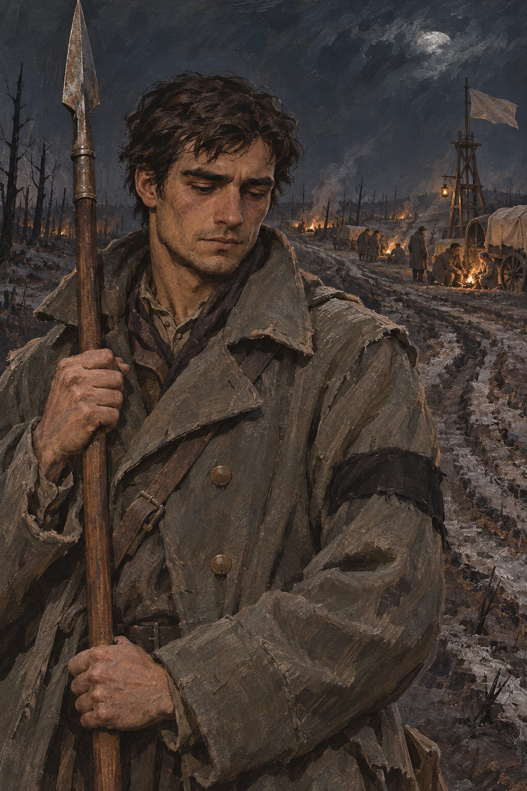
Серая шинель с чёрным лоскутом, копьё, отцовские брови, при старших сжимает древко до белых костяшек.
Пехотинец охраны дорог в колонне майора Седых, сын интенданта Ефима Сажина.
Чтобы его имя перестало быть чужим рычагом — хоть ценой окружного стола.
В двадцать два стоял в карауле у ворот Чаши; знает, что его имя в караульном списке у Румы. Видел, как Кондрат платит людям с жетонами «К. О.». Копья на отца не поднимет, что бы ни приказали.
Не поднимет копьё на отца; против своих не пойдёт без приказа майора или доказательства в руках.
В горелой роще отпускает отца: «Иди, отец. Моё имя — моё дело». Через отца передаёт слова о наёмниках и о лодке; если отца остановили у колодца (А1), говорит о найме сам, вслух, отряду на настиле в раунде 1: «Кондрат платил людям. За отца. Не за живого». На настиле при прочитанной расписке опускает копьё первым: «Это не приказ майора».
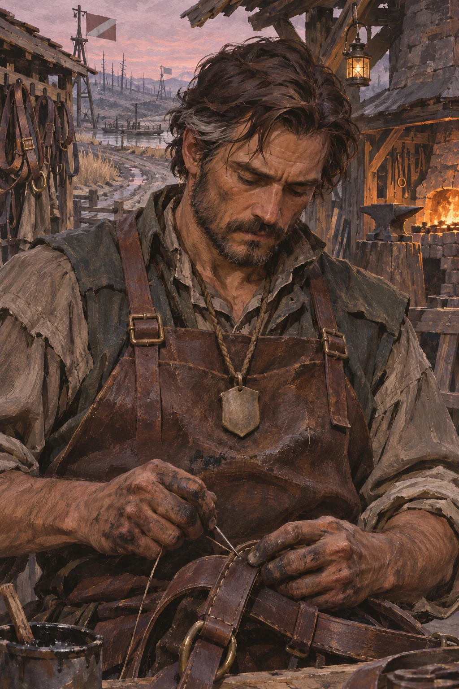
Кожаный фартук, стёртый полковой значок на верёвке, руки в дёгте; говорит, не поднимая глаз от работы.
Бывший сержант конного лагеря, старший мастерских Двора демобилизованных.
Чтобы двор жил своим трудом и не стал конюшней охраны дорог.
Его отметка «конный лагерь — пропущено» стоит на листе № 14. Он вывел из Чаши троих больных — и оставил остальных; договор Румы не подписывает, потому что помнит это.
Не знает о костре и о письмах Румы. Ворота двора закрыть может, открыть потом — не обещает.
О троих — когда спрашивают, почему он не подписал договор. Об отметке — когда видит лист: «Значит, знал. И молчал».
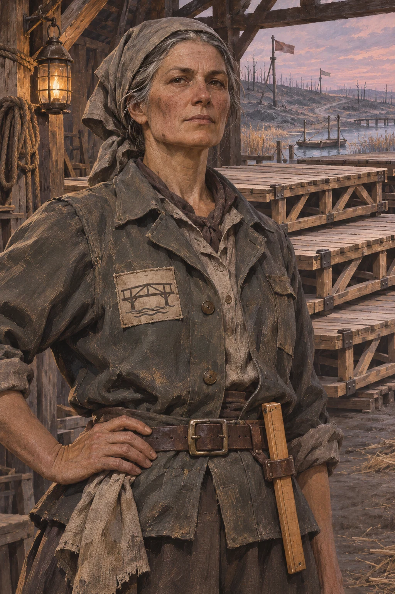
Рабочая куртка со знаком моста, прямая спина, мерный аршин за поясом, седые волосы под платком.
Старшая выживших мостовиков; держит мастерскую у Ответвления Чаши, где бывшие пленные строят мостки для дворов Межи.
Чтобы Ефим сам сказал вслух то, что она помнит, и чтобы шестерых произнесли там, где пишут.
Готова помочь Ефиму ложным следом — пустить повозку мастерской по дороге Чаши с его курткой, — если он ответит ей при всех. Другим выжившим она этого не обещала.
Не прощает за других. О проходном листе и подписях постов не знает.
О просьбе у ворот — без броска, при Ефиме или на прямой вопрос. О повозке — только после того, как Ефим ей ответит.

Тёмная рубаха, жестяная бирка «21» наружу, рубанок в руке; смотрит прямо и долго.
Выживший из Чаши, работает в мастерской Агафьи, на собрания не ходит.
Чтобы Ефим назвал его по имени и записал имя, а не номер.
Если ему не дадут спросить Ефима, он остановит повозку ложного следа — Агафья говорит за мастерскую, но не за него.
Маршрута отряда не знает; при Агафье руки на Ефима не поднимет.
На вопрос, чего он хочет, — один вопрос Ефиму. На честный ответ отпускает повозку: «Теперь иди».
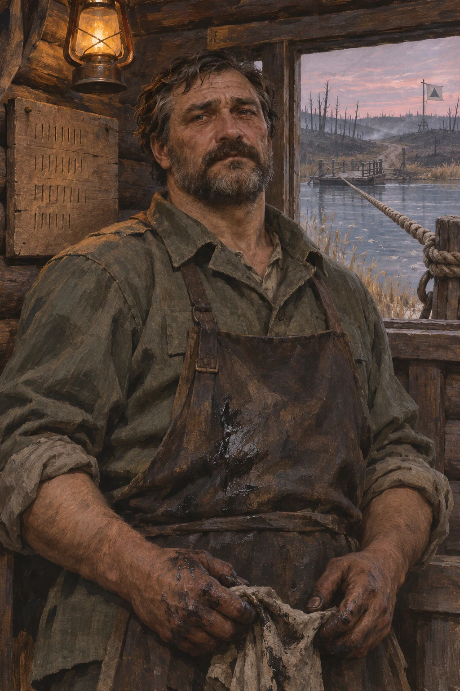
Передник поверх старой формы, ладони в смоле, широкие плечи; на стене избы за ним — счётная доска в зарубках.
Перевозчик Верёвочной; паром ходит по канату между двумя воротами.
Чтобы паром снова был его, а не заставы.
Перевёз двадцать семь связанных мостовиков и подписал «переправлено». Молчит о заставе с жетонами, потому что боится за паром.
Чаши изнутри не видел. Заставщикам в открытую не перечит.
О колонне — на вопрос о счётной доске. Ворот заклинивает после слов Ефима «ты перевозил, я подписывал» или по уговору отряда.

Закатанные рукава, связка ключей, табличка с правилами двора у локтя, усталое хлебосольное лицо.
Хозяин постоялого двора «Сухое крыльцо»; под его мачтой ночуют все.
Чтобы под его мачтой не брали никого.
В его дворе в день перемирия жгли архив и знамёна; он видел Руму и Кондрата у костра и тайком оставил себе обгоревший лоскут.
Не знает, что было в бумагах; никого не выдаёт и не прячет.
О костре — на вопрос о чёрном квадрате во дворе или о флагах на мачтах. Лоскут отдаёт тем, кто не жёг мосток.

Дорожный костюм, футляр для показаний под мышкой, шляпа с узкими полями; за спиной вышка с двумя стражниками.
Представительница окружного стола на Пограничной пристани; принимает добровольные явки и выдаёт расчёт демобилизованным.
Принять показания и записать каждое имя так, как его сказали.
Людей у неё мало; защищать она может только за окружной вехой; с вышки на том берегу её люди видят восточный край настила, но на доски не выходят.
Не обещает приговоров и прощений; её люди стоят на вышке, на настил не выходят и не стреляют.
Получив письмо или сигнал с дороги, ставит людей на вышку следить за настилом от 18-го столбца и отвечает письмом. О том, как мало у неё людей, говорит прямо, если спросят.

Почтовая накидка, сумка с медной пряжкой, книжка с часами прибытия, конь в пене у мачты.
Верховая посыльная Пепельной Межи; возит письма всем сторонам.
Довезти каждое письмо в те руки, которым оно написано.
Охрана предлагала ей плату за вести о Ефиме; плату она не взяла, но на вопрос «куда он шёл?» ответила правду — к Горелой мачте. Так дозор его и нашёл, и ей за это неловко.
Письма не вскрывает, ложных не возит, чужих слов не передаёт.
На вопрос «как дозор нашёл Ефима?» — правда. «От кого письмо?» — показывает печать. Если Ефим ночью уходит, будит отряд.
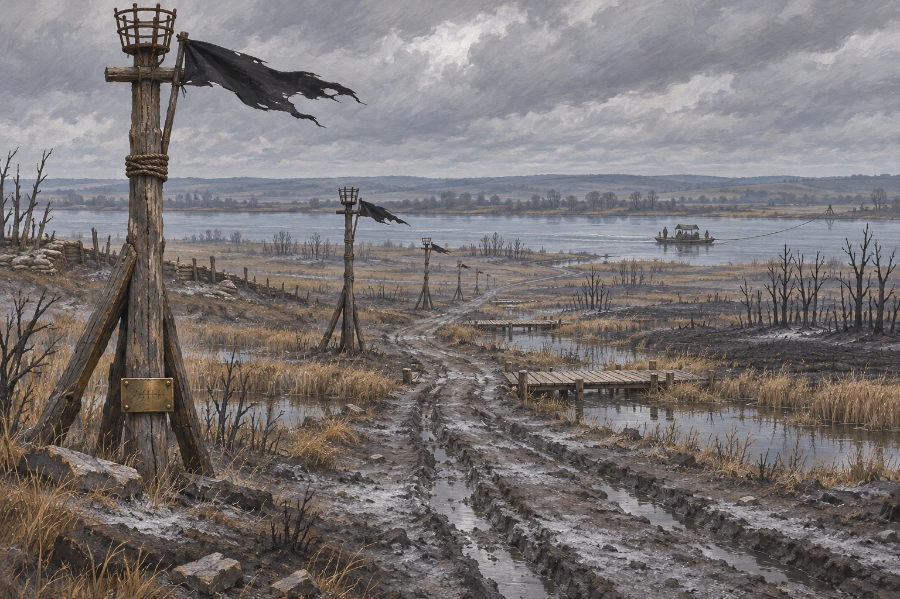
Пограничье между старой линией фронта и окружной рекой: выжженные пустоши, гати через топи, паромы на канатах и мачты охраны дорог — по одной на перегон, двенадцать от Казённого двора до Пограничной пристани. Пепел девятый месяц лежит в колеях и плавает в воде; здесь говорят, что пепел не тонет. На мачтах треплются чёрные лоскуты, под каждой — латунная табличка с законом мачты. Деревни редки, ночуют у мачт, а дорогу меряют не вёрстами, а мачтами.
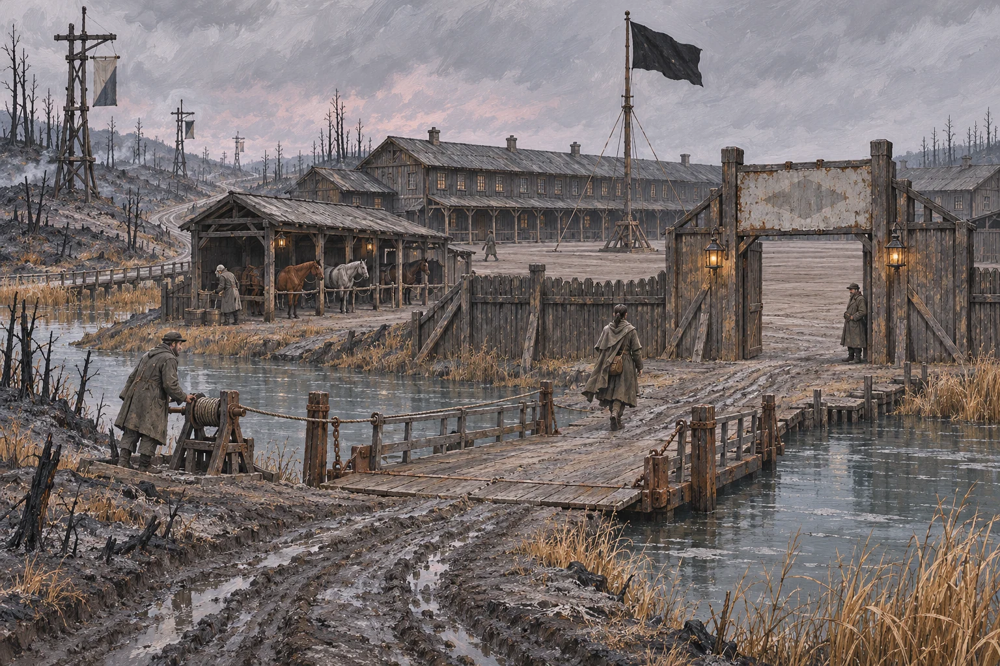
Штаб охраны дорог за Ржавой переправой, нулевая мачта Межи: длинная казарма, конюшни, плац, утоптанный до звона, и мачта с чёрным флагом. Отсюда на рассвете под рожок выходят разъезды и колонны. На воротах — полковой номер: после перемирия его закрасили известью, но цифры проступают сквозь побелку после каждого дождя, и возчики до сих пор называют двор по номеру полка, а не по-новому.

Сгоревшая станция на Пепельном тракте, третья мачта от Казённого двора: обугленный сруб без крыши, мачта с обрывком чёрного флага и доска объявлений под ней, куда охрана, окружной стол и проезжие прибивают свои листы. Ночевать здесь никто не остаётся. Вокруг стоит пепельный подлесок — стволы похожи на обгоревшие спички, — а в низине пепел лежит по щиколотку, глушит шаги и пахнет мокрой головнёй.

Заброшенная весовая на тракте, где в войну взвешивали обозный фураж и записывали каждую подводу: длинный стол, изрезанный ножами, весы для обозов с чугунными гирями, крытый двор с двумя выходами на дорогу. Название пошло от скола на главной гире — на нём весовщики когда-то клялись в честном весе. У мачты латунная табличка с законом мачты, на стене — мачтовая книга станции: проезжие вписывают в неё, кто прошёл и когда.
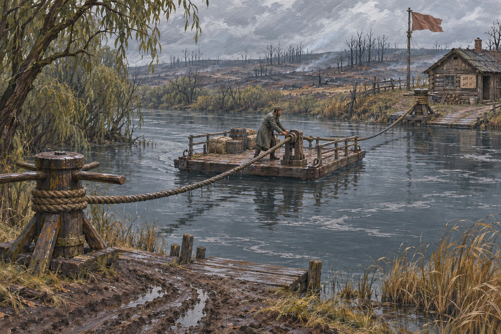
Единственная переправа этого перегона: паром на смолёном канате между двумя воротами через окружную реку. На западном берегу — ивовая поляна и топкий ивняк, мачты там нет; на восточном — изба перевозчика со счётной доской на стене и мачта переправы. Перевозчики считают рейсы зарубками, а не словами, и доска висит на стене дольше, чем живёт иной перевозчик. Канат скрипит даже в безветрие.

Бывший конный лагерь полка, где в войну держали ремонтных коней и чинили обозы; теперь — мастерские демобилизованных: кузня, шорная, навесы с колёсами и упряжью, запах дёгтя и палёного копыта. Над воротами — пустая перекладина, на столбе — дырки от гвоздей снятого знамени, у ворот — мачта двора. Люди Двора сами чинят настилы окрестных дорог; на Меже говорят, что Двор чинит упряжь всем, а служит — никому. Северная дорога уходит отсюда напрямик к тракту.

Развилка, где от дороги уходит колея в старый карьер Сухая Чаша; камень там давно не бьют, а колеи остались глубокие, и пепел лежит в них ровными полосами. У развилки — мастерская под навесом: бывшие пленные тешут мостки и настилы для дворов Межи, пахнет смолой и свежей стружкой. Рядом доска, затянутая холстом, и мачта ответвления с голой верёвкой. По дороге Чаши ходит повозка мастерской.
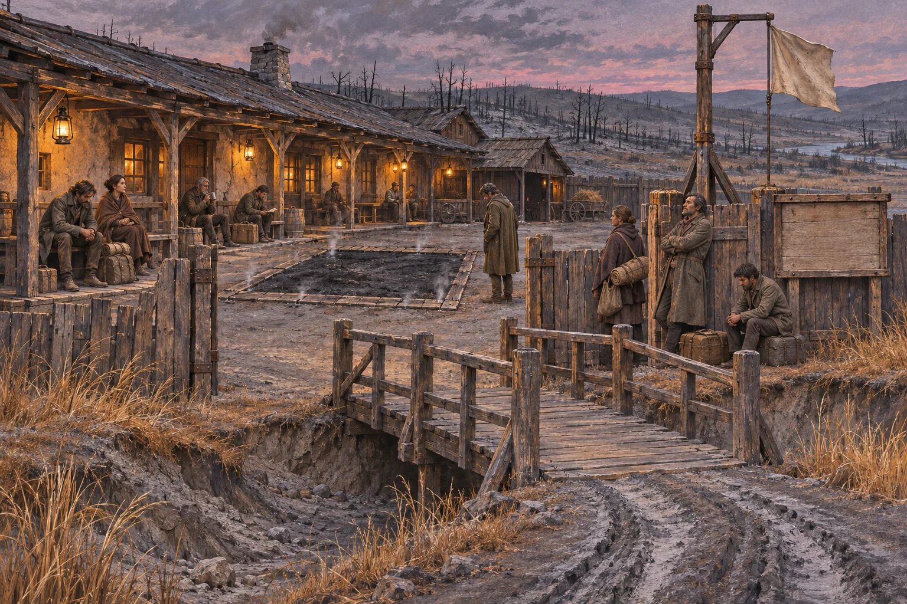
Постоялый двор за Сухим оврагом, где ночуют все, кто идёт к пристани: длинная веранда с лавками, табличка правил двора у входа, колодец с воротом, навес для коней и мачта у ворот — под ней спят и охрана, и чужие. Посреди двора — чёрный квадрат выжженной земли, на котором не растёт трава; из щелей досок веранды лезет пепел, сколько его ни выметай. К двору ведёт один деревянный мосток через Сухой овраг.
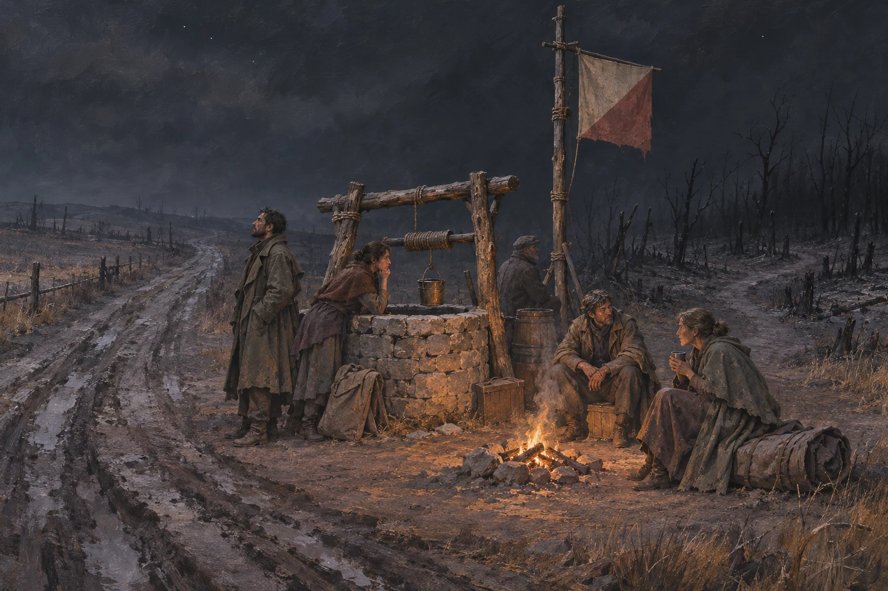
Каменный колодец под деревянным срубом на развилке северной дороги и восточной тропы; его рыли для офицерских разъездов, и вода в нём до сих пор самая чистая на перегоне, хоть и отдаёт железом. Рядом мачта и вытоптанная площадка для привала с кострищами в несколько рядов. По восточной тропе — горелая роща: обугленные чащи, пни и стволы, торчащие, как обгоревшие флагштоки.

Развилка у головы Долгого настила: окружная дорога уходит прямо на гать, сухая — в обход топи, на два дня дольше. На развилке две старые вехи с вырезанными стрелками, пустая сторожка охраны и мачта; с её верха в закатном свете виден весь настил до восточного конца. Возчики перед гатью снимают шапки и пересчитывают людей вслух: в тумане на настиле, говорят, человек теряется в двух шагах от своих.

Гать над топью шириной в шесть шагов: сваи с ржавыми фонарными крюками, гнилые края в камыше, прогоревший пролёт посередине, доски ходят под ногами и выдыхают болотную воду. Середина настила — чистый «хребет». Фонари на крюках не зажигают с войны, и туман по утрам стоит здесь по пояс. Восточный конец виден с вышки пристани; за ним, уже за краем настила, стоит окружная веха: за ней — земля окружного стола.
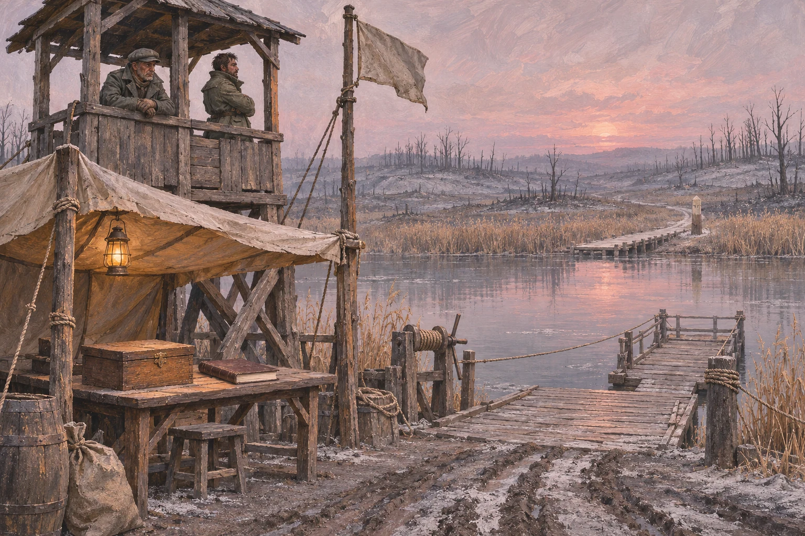
Дощатый спуск к реке, где швартуются окружные барки; навес окружного стола с ящиком для показаний и книгой явок, вышка с окружной стражей. Стол открылся в этом сезоне: здесь выдают расчёт демобилизованным постам и принимают добровольные явки, и очередь у навеса тянется с утра. За окружной вехой власти охраны дорог нет. Отсюда виден восточный конец Долгого настила и сама веха.
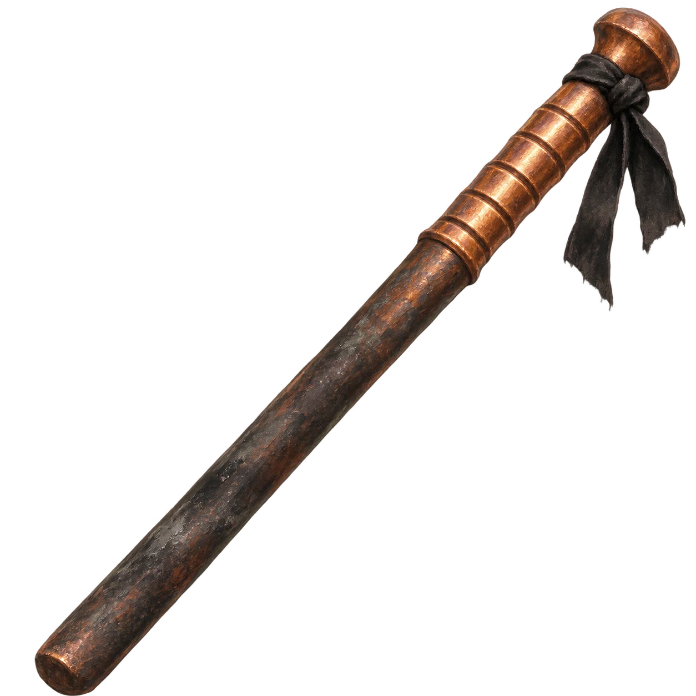
Медный жезл длиной в локоть, с зарубками полкового номера на рукояти и чёрной ленточкой, завязанной у навершия. Медь потемнела от пепла, рукоять отполирована ладонью до блеска.
Ефим бросает жезл к ногам отряда в сцене 1 вечера 1: он сдался. По закону мачты Ефим за тем, кто держит жезл, до окружного стола. Предъявленный под мачтой, жезл останавливает любого, кто захочет взять Ефима под ней: охрана сама держит этот обычай. Если жезл не подняли, Ефим протягивает его рукоятью вперёд: «Держите, пока не решите». В исходе «Ящик у стола» жезл, если он у отряда, ложится на стол Неллы Арк рядом с ящиком.
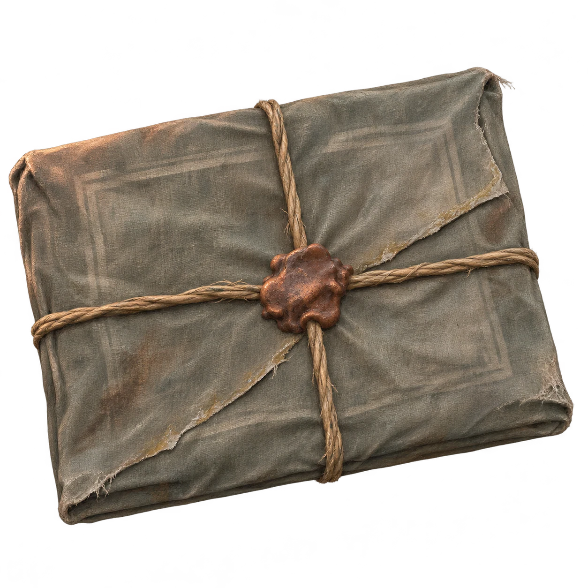
Пакет из куска плащ-палатки, проклеенный по швам и перевязанный шнурком крест-накрест; узел залит воском. Внутри прощупываются сложенные листы.
Сразу после сдачи Ефим отдаёт пакет тому, кого выберет стол: «Здесь копии. Если я не дойду — отдайте окружной. Не вскрывайте при мне. Пожалуйста». Вскрыть пакет — выбор, а не проверка: ведущий выдаёт «Проходной лист № 14 (копия)» и улику «Подписи на листе № 14»; Ефим замечает сломанный шнур и на привале говорит один раз: «Значит, вы видели свои имена. Я хотел сказать их сам». Если пакет цел, Ефим вскрывает его сам, когда пишет завет у колодца в вечер 6, кладёт лист перед отрядом и запечатывает копии обратно; в ящик Чаши пакет не идёт. Кому отдать пакет — решение стола с последствием: тому, кто будет рядом с ящиком, или тому, кто быстрее дойдёт до вехи. В финале ящик сгорел или у Румы, а пакет у героя на ногах в столбце 20+ (18+ с вышкой) или на досках вне колонны — исход «Копии у стола», иначе — «Пепел».
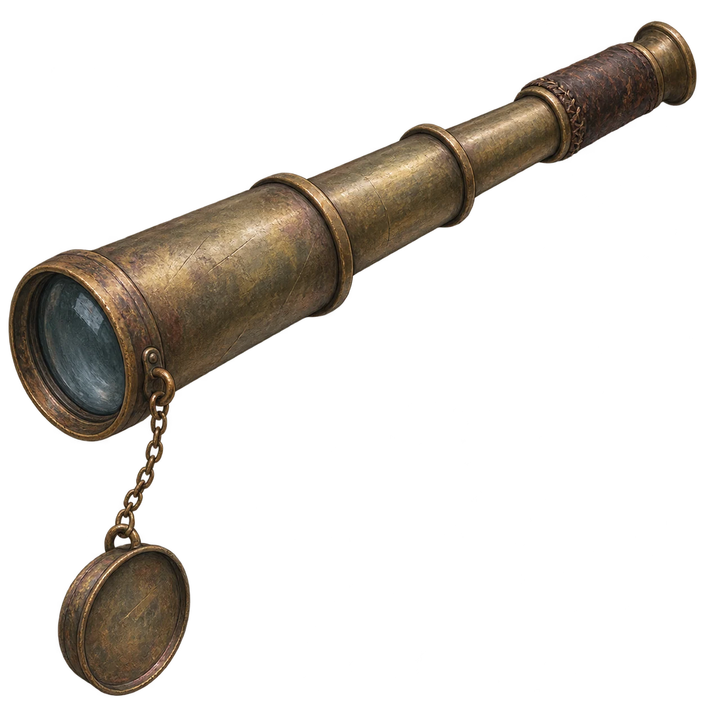
Латунная подзорная труба в три колена, на корпусе выцарапано «Сухой мост». Окуляр обмотан кожей, крышка висит на цепочке.
С мачты Анфиса видит флаг колонны на три мачты назад без мачтовой книги и встречных (Р 3 — в трубу у горизонта): чтение мачт без броска; с разрыва 4 нужна мачтовая книга; в вечер 1 — чёрный лоскут на Ржавой мачте. В вечер 7 на закате с головы настила — лодка в камышах у северного края настила без броска. В вечер 8 — металл в камышах у восточного конца без броска.
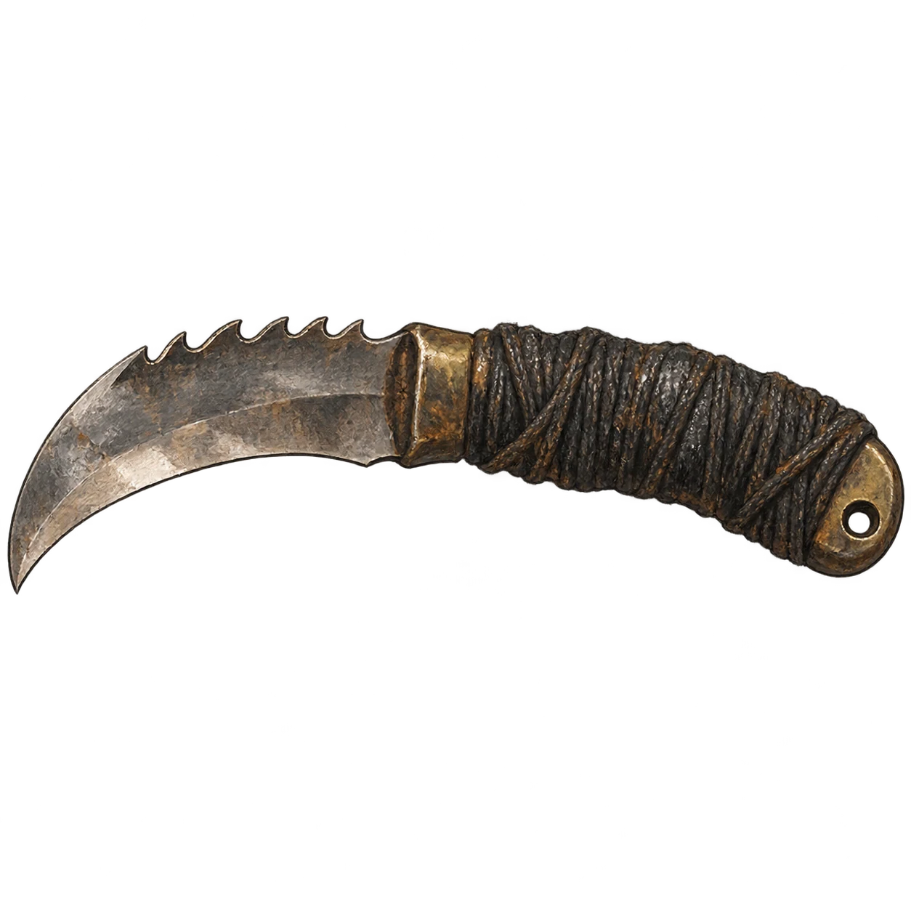
Кривой нож с зубцами на обухе, рукоять обмотана просмолённым шнуром. Таким режут стропы, сети и паромные канаты.
Перерубить канат у сваи ворота во встрече «Канат Верёвочной» — бонусным действием. Отвязать лодку в камышах у настила и пустить её по течению ночью вечера 7 — без броска. Освободить схваченного Ефима («Жезл в пепле», вечер 1) — бонусным действием вместо действия.
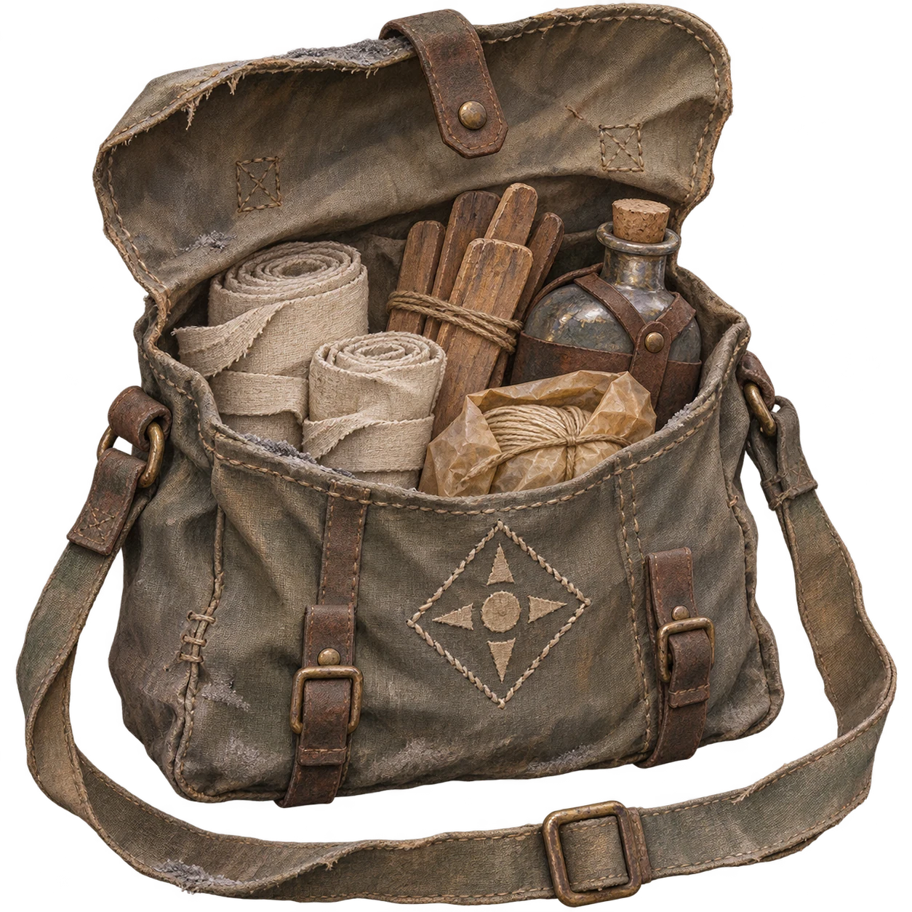
Холщовая сумка через плечо со знаком дорожного милосердия: бинты, лубки, фляга с уксусом, нитки в вощёной бумаге. На дне — пепел, который не вытряхивается.
В горелой роще (вечер 6) — поднять Ефима, лежащего на 0 хитов, бонусным действием вместо действия: он встаёт с 1 хитом. В финале на Долгом настиле — «Сбить пламя» бонусным действием: Пелагея рядом с ящиком Чаши даёт ему +2 целости (не выше 14) и сохраняет действие.

Стальное зеркальце с прорезью-прицелом посередине; на обороте выгравирована таблица мачтовых знаков охраны дорог.
Читать сигналы станций с мачт. В вечер 7 у Двух вех Елисей подаёт сигнал вышке Пограничной пристани без броска (другой герой — Интеллект Сл 12): вышка предупреждена, в финале «Донесли» засчитывается со столбца 18.
Железный знак моста на ремешке — опознавательный знак батальона мостовиков той стороны, где служила Роксана. Края стёрты, ремешок новый.
В вечер 4 у мастерской выживших Агафья Свая и Арсен Луг, увидев знак, говорят с отрядом без броска, и Арсен задаёт свой вопрос Ефиму при свидетелях. Знак — связь Роксаны с этой историей вместо подписи на проходном листе.
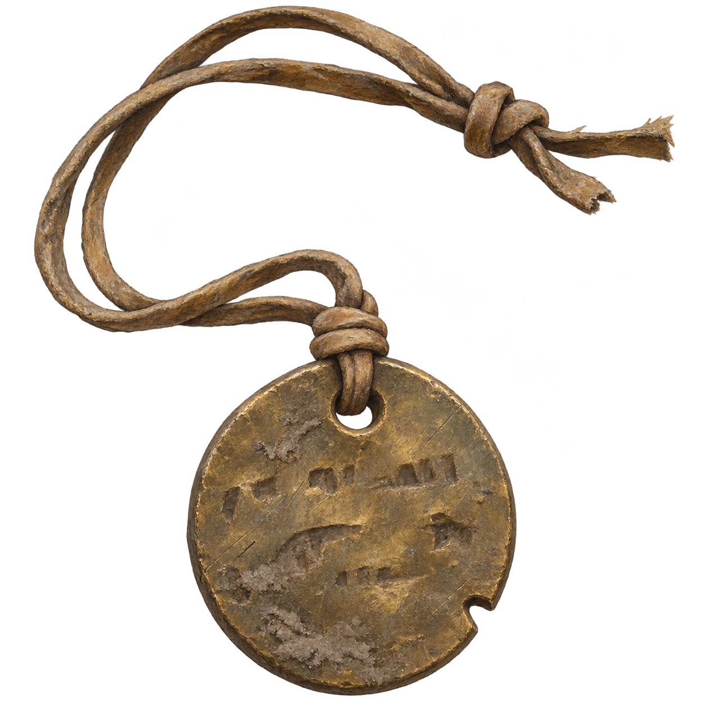
Латунный жетон на сыромятном шнурке с выбитыми буквами «К. О.» и зарубкой. Тёплый от чужой шеи, пахнет речной тиной.
Заставщики отдают его как квитанцию за пошлину на пароме, или он остаётся трофеем с упавшего. Показывает, кто платит заставе (улика «Жетоны „К. О.“»). В «Горелой роще», показанный до первого выстрела, — мирный путь без броска: «Кондрат вас продаст, как продал паром»; его же можно отдать старшему наёмнику за расписку вместо пятнадцати монет.
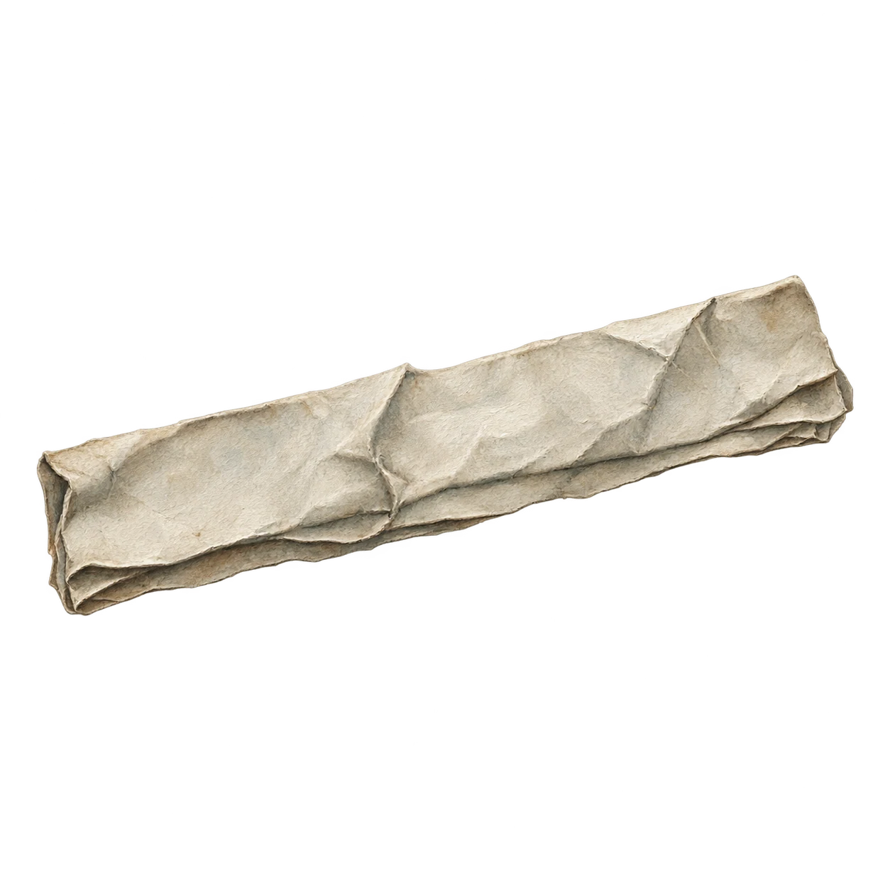
Мятая бумажка, сложенная в узкую полоску; карандашные буквы, внизу две буквы «К. О.».
Только из рощи, в ветке «Догнали в роще»: из сумки наёмника или купленная мирно. В финале — действие «Расписка» один раз за бой: герой в 6 клетках от любого пехотинца Румы читает её вслух, без броска; в конце раунда пехота опускает копья и уходит, ящик у ветерана остаётся в его клетке. Если расписка дошла до стола Неллы Арк, она записывает Кондрата Обуха и за наём.
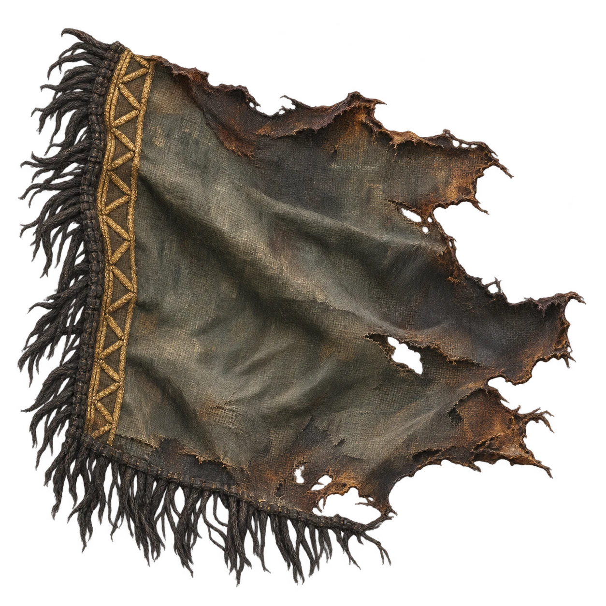
Обгоревший лоскут полкового знамени величиной с ладонь: чёрная бахрома, на краю уцелела полоска золотого шитья.
Игнат Половик отдаёт лоскут, если отряд не сжёг Сухой мосток; иначе — Убеждение Сл 12. В вечер 7 у Двух вех лоскут, привязанный к вехе на сухой дороге, — «Повёрнутая веха» без броска: колонна идёт за своими флагами, задержка −1.


Условия: Бой на Долгом настиле кончился тем, что в конце раунда ящик Чаши не у противника и стоит в столбце 20 или восточнее (в столбце 18, если вышка предупреждена), — или противники ушли или упали (колонна не в счёт), пока ящик стоял в столбце 12 или восточнее.
Герои сносят ящик за окружную веху и ставят на стол Неллы Арк. Она снимает оковку и считает бирки вслух — двадцать семь; если Арсен назвал себя, двадцать первую кладёт отдельно: «Арсен Луг. Живой». Потом читает завет Ефима при всех, по его порядку: Рума Седых — распоряжение о Чаше и костёр; Кондрат Обух — конвой, караул, подпись под отказом (и наёмники, если у отряда расписка); Ефим Сажин — перевод, лист № 14 и «работ не прекращать»; Платон Сажин — караул, вписан обратно рукой отца; Олет Морин — отметка конного лагеря и трое, которых он вывел; Семён Узлов — переправа. На строке «Сухой мост, смена четырнадцатого» — имена героев, чьи игроки согласились, и подписи тех, кто подписался у Двух вех; если согласившихся нет — должности смены. Нелла переносит в окружную книгу каждое имя так, как оно написано: «Явка добровольная. Составитель жив и подписал — принимаю. Названные — свидетели, не обвиняемые, пока окружной стол не решит иное». Если Ефим у Румы, она дописывает: «Вызвать Е. Сажина к столу». Последнее, что видят герои, — Ефим там, где его оставила дорога: в колонне Румы, без ремня, на шаг позади майора, — или у Двух вех, где перевозчик Неллы ставит лодку на воду: «Завтра по реке. К вашему столу».
Цена: Имена согласившихся героев в окружной книге; охрана дорог больше не пустит их под свои мачты; Рума на свободе и знает, кто донёс ящик её интенданта. Если Ефим у неё, окружной вызов к нему ещё придётся донести. Что делать со своей строкой в листе, каждый герой решает поступком после стола, а не речью.
Условия: Ящик Чаши сгорел (целость 0) или оказался у Румы (ветеран с ящиком кончил движение у лодки в 17/1 или ящик в конце раунда в столбцах колонны), но в этот момент герой с клеёнчатым пакетом Ефима стоит на ногах в столбце 20 или восточнее (18 с вышкой) или на досках вне столбцов колонны.
Бой кончается на этом: дым над досками или колонна, сомкнувшаяся вокруг ящика. Противники уходят. Герой с пакетом сходит за окружную веху и кладёт пакет на стол Неллы Арк. Внутри — лист № 14 и приказы по Чаше, переписанные в ночь перед костром, под подписью «Е. С.»; ни бирок, ни завета. Нелла читает лист вслух, графа за графой, и на строке «Сухой мост» — имена согласившихся героев (если их нет — должности). Она вносит их в окружную книгу так же, как остальных: «Явка добровольная. Названные — свидетели, не обвиняемые». Потом закрывает книгу: «Копии принимаю. Составитель жив — пусть заверит их сам, тогда будет дело». Последнее, что видят герои, — Ефим там, где его оставила дорога: в колонне Румы, без ремня, на шаг позади майора, — или у Двух вех, где перевозчик Неллы ставит лодку на воду: «Завтра по реке. К вашему столу».
Цена: Двадцать семь бирок и завет сгорели или у майора; дело держится на копиях и на том, дойдёт ли Ефим до стола заверить их. Кондрат или Рума получили то, за чем пришли; имена согласившихся героев — в окружной книге.
Условия: Ящик Чаши сгорел или оказался у Румы, а пакет Ефима в этот момент не дошёл: его носитель упал, стоит в столбцах колонны или пакета на поле нет.
Бой кончается на этом. Противники уходят; от вехи идут люди Неллы. На стол нечего положить — ни бирок, ни листов, только сам отряд. Нелла открывает книгу явок и спрашивает, что они видели сами. Отвечать никто не обязан. Если кто-то из героев говорит, она пишет одну строку с их слов: «Со слов поста „Сухой мост“: колонна двадцати семи, лист № 14, Чаша» — и имена тех, кто сам назвал себя. Последнее, что видят герои, — Ефим там, где его оставила дорога: в колонне Румы, без ремня, на шаг позади майора, — или у Двух вех, где перевозчик Неллы ставит лодку на воду: «Завтра по реке. К вашему столу».
Цена: Бумаг Чаши больше нет; Рума сохранила полк, Кондрат — свою подпись в тени. Ефим жив и знает, что всё написанное сгорело или лежит у майора. В окружной книге — только то, что герои сказали сами.
Авторская подготовка и техническая проверка не заменяют живую игру. Длительность, сложность и эмоциональное восприятие пока не проверены группой. Иллюстрации (53) созданы генерацией изображений OpenAI в одном стиле; тактические схемы построены из данных встреч. Полный каталог содержит материалы ведущего — публиковать его целиком для игроков нельзя.